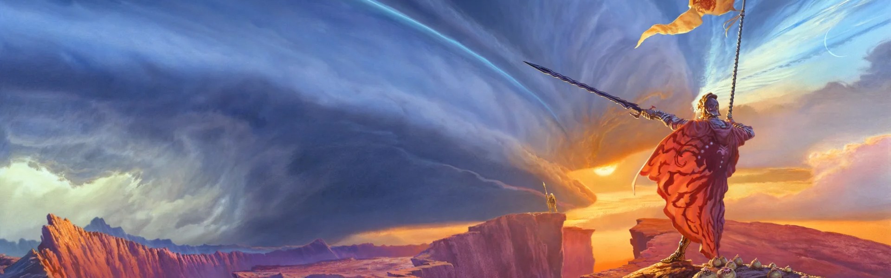

Best Characters from The Stormlight Archive
As a huge fan of Brandon Sanderson, I’ve been captivated by the incredible world of The Stormlight Archive. Its deep lore, intricate magic system, and, most of all, its unforgettable characters. In this space, I’ll share my personal favorites, the ones who stood out to me for their growth, struggles, and impact on the story.
Dalinar Kholin
Dalinar Kholin, also known as Daddynar by fans, is a powerful Alethi noble, legendary warrior, and a man of unshakable discipline. Guided by his strong sense of honor and duty, he seeks to bring order to a chaotic world while striving to become the leader his people need. His journey is one of strength, wisdom, and redemption.

Jasnah Kholin
Jasnah Kholin is a brilliant scholar, a sharp strategist, and a powerful wielder of magic. Fiercely independent and unwavering in her pursuit of knowledge, she challenges traditions and seeks truth above all else. With a commanding presence, unmatched intellect, and incredible abilities, she is both an inspiring leader and a force to be reckoned with.

Wit
Wit is a mysterious and eccentric wanderer with an uncanny knack for being in the right place at the right time. Often speaking in riddles and seemingly nonsensical remarks, he hides a sharp mind beneath his playful demeanor. There’s more to him than meets the eye, and those who dismiss him as a mere fool may find themselves gravely mistaken.